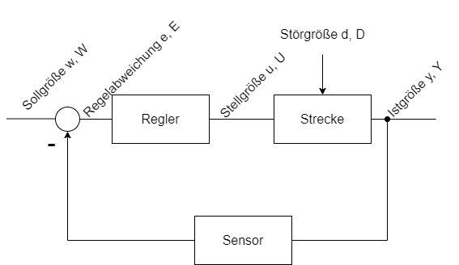
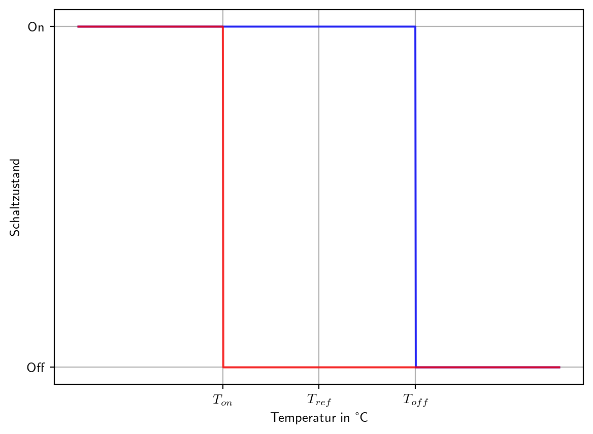
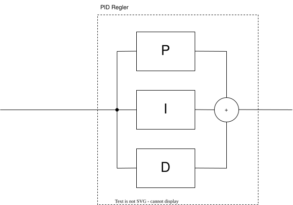
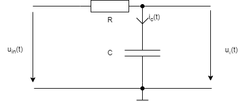
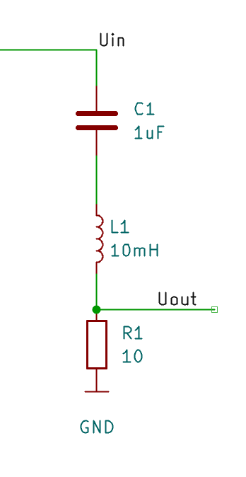
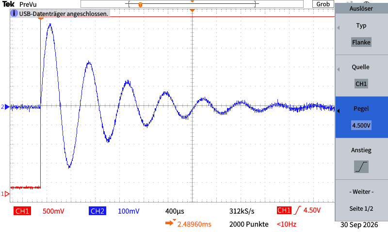
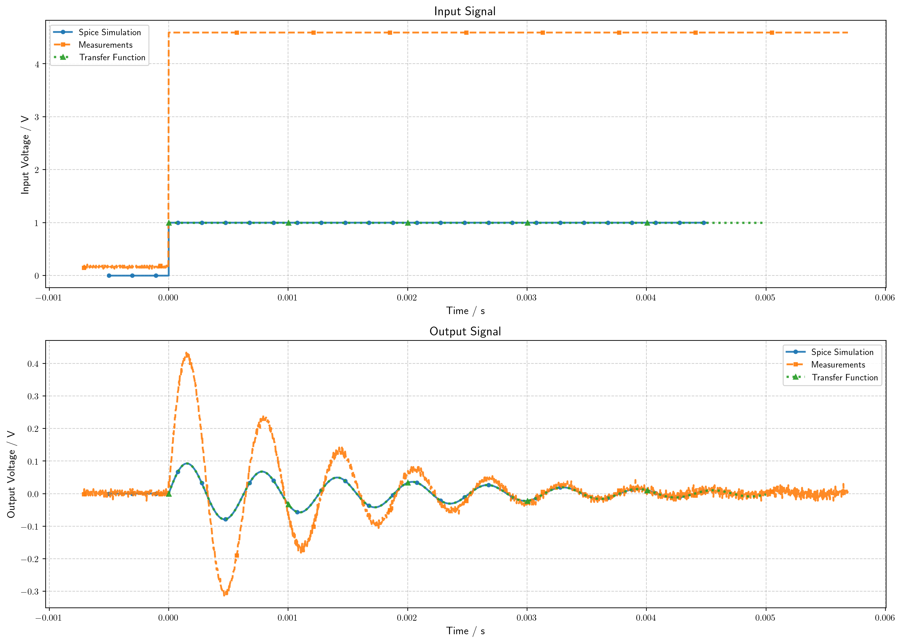
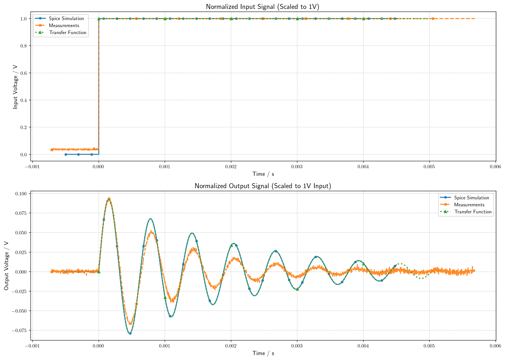

\(T_{ein}\) … Einschaltschwelle
\(T_{aus}\) … Ausschaltschwelle
\(T\) … Temperatur
\(T_{ref}\) … Referenz Temperatur
In diesem Teil des Skriptums geht es darum, wie wir Maschinen und Schaltungen dazu bringen, trotz Störeinflüssen das gewünschte Verhalten zu zeigen. Zum Beispiel soll ein Tempomat des Autos die Geschwindigkeit halten, trotz starkem Gegenwindes. Es werden die Grundlagen der Regelungstechnik vermittelt. Dabei wird das theoretische Wissen anhand konkreter Anwendungen erarbeitet.
Viele Aufgaben von Maschinen können auch durch Steuerungen umgesetzt werden. Eine Regelung erlaubt es aber, auf unerwünschte Einflüsse, sogenannte Störgrößen, zu reagieren. Als Beispiel soll der Tempomat (Geschwindigkeitsregelanlage) des Autos dienen. Die Aufgabe des Tempomats ist es, die Geschwindigkeit (Regelgröße) konstant zu halten. Als unerwünschte Einflüsse (Störgrößen) sind alle physikalischen Größen zu betrachten, welche die Geschwindigkeit beeinflussen. Beispiele sind die Steigung der Straße und Wind.
Die Geschwindigkeit des Autos wird über die Leistung (Stellgröße) bestimmt. Führt die Straße Bergauf, wird mehr Leistung für die gleiche Geschwindigkeit benötigt. Es muss also die Leistung laufend angepasst werden, um eine konstante Geschwindigkeit zu erhalten.
Bei einer Steuerung würde eine Leistung eingestellt werden und sich daraus eine Geschwindigkeit ergeben. Dieses wäre jedoch nur für einen voreingestellten Fall identisch mit der gewünschten Geschwindigkeit.
| Bezeichnung | Formelzeichen | Erklärung |
|---|---|---|
| Regelgröße | y(t), Y(s) | Ausgangsgröße des Regelkreises, die gemessen und kontrolliert wird. |
| Sollwert, Führungsgröße | w(t), W(s) | Gewünschter Zielwert der Regelgröße. Der Regler versucht, diesen Wert zu erreichen. |
| Stellgröße | u(t), U(s) | Vom Regler ausgegebene Größe, die das System beeinflusst. |
| Störgröße | z(t), Z(s) | Eine äußere Größe, die den Prozess stört und die der Regler kompensieren muss. |
| Regelabweichung | e(t), E(s) | Differenz zwischen Sollwert und Istwert der Regelgröße. |
| Strecke | \(H(s)\) | Der zu regelnde Prozess oder das System. |
| Regler | \(R(s)\) | Die Einrichtung oder der Algorithmus, der die Stellgröße bestimmt. |
| Sensor | \(M(s)\) | Die Einrichtung oder der Algorithmus, der die Ausgangsgröße bestimmt. |
Regeln ist ein Vorgang, bei dem der IST-Wert einer Größe gemessen und, durch Nachstellen der Stellgröße, dem SOLL-Wert angeglichen wird.
Dazu wird das Ergebnis an den Eingang zurückgeführt und vom Sollwert subtrahiert. Es entsteht eine Rückkopplung. Durch das negative Vorzeichen handelt es sich um eine Rückkopplung im Spezialfall einer Gegenkopplung. Die Differenz aus dem Sollwert und dem zurückgeführten Istwert ist die sogenannte Regelabweichung, welche über den Regler zur Stellgröße wird. Die Stellgröße ist nun die physikalische Größe, welche die Regelstrecke zum gewünschten Verhalten führt.

Es kann zwischen zwei Arten von Reglern unterschieden werden. Erstere sind einfache Regler, welche die Stellgröße nur zwischen verschiedenen Zuständen hin- und herschalten können. Zum Beispiel Ein / Aus. Oder die Gänge eines Automatikgetriebes. Diese Regler werden unstetige Regler genannt. Unstetige Regler können gut mittels Hysteresen beschrieben werden.
Der zweite Typ von Regler kann die Stellgröße kontinuierlich anpassen. Diese Regler werden stetige Regler genannt. Stetige Regler können gut mit mathematische Gleichungen im Laplace Bereich beschrieben werden.
Klassische unstetige Regler sind Bimetallschalter. Diese werden zum Beispiel bei Heizlüftern eingesetzt.
Ist der Raum und damit das Bimetall kalt, so ist der Kontakt geschlossen und der Lüfter läuft. Wird die Raumluft und damit das Bimetall warm, wird der Kontakt geöffnet und der Lüfter hört auf zu heizen.
\(T_{ein}\) … Einschaltschwelle
\(T_{aus}\) … Ausschaltschwelle
\(T\) … Temperatur
\(T_{ref}\) … Referenz Temperatur

Der Zweipunktregler kann, wie der Name schon sagt, die Stellgröße zwischen zwei Zuständen schalten. Zum Beispiel die Heizung einschalten, wenn die Temperatur zu niedrig ist und wieder Abschalten, wenn die Temperatur hoch genug ist. Siehe dazu die Kennlinie Abbildung 4.2. Die Kennlinie stellt eine Hysterese dar. Die Umsetzung ist auch mittels Operationsverstärker möglich.
Für das Verständnis von stetigen Reglern ist es hilfreich, die Regelungstechnik mathematisch zu betrachten, da sich ein Regler sehr gut mit Formeln beschreiben und erklären lässt. In einem eigenen Kapitel soll behandelt werden, wie Regler praxisnahe implementiert werden können.
Der oben gezeigte Regelkreis Abbildung 4.1 lässt sich mathematisch als Übertragungsfunktion beschreiben. Hier werden ausschließlich SISO (Single Input Single Output) und LTI (Linear Time Invariant) Systeme betrachtet. Das bedeutet Systeme, die einen Eingang und einen Ausgang haben. Jeder Block kann einzeln mit einer Übertragungsfunktion oder analog der Vierpoltheorie beschrieben werden. Wie auch in der Vierpoltheorie kann aber auch eine Verschaltung von Blöcken als Übertragungsfunktion beschrieben werden. Ein Block wird in der Regelungstechnik auch als Strecke bezeichnet.
Der PID Regler ist ein stetiger Regler, der sich aus drei Teilen zusammensetzt. Er ist der am häufigsten verwendete stetige Regler in der Regelungstechnik. Wobei der D Anteil in der Praxis oft weggelassen wird.

Der PID Regler ist ein stetiger Regler und kann nur bei stetigen Systemen verwendet werden. Das bedeutet, dass die Strecke, die Regelgröße und die Stellgröße stetig sein müssen. Das System muss linear sein. Das bedeutet, dass die Übertragungsfunktion der Strecke linear sein muss. Zumindest im Nahbereich des Arbeitspunktes. Das System muss zeitinvariant sein. Das bedeutet, dass die Übertragungsfunktion der Strecke sich nicht mit der Zeit ändert. Die Anforderung der Linearität und der Zeitinvarianz werden in der Regelungstechnik als LTI (Linear Time Invariant) Systeme bezeichnet. Es darf nur einen Eingang und einen Ausgang geben. Das bedeutet, dass der PID Regler nur für SISO (Single Input Single Output) Systeme verwendet werden kann.
Die Übertragungsfunktion beschreibt den Zusammenhang zwischen Ausgang und Eingang. Ist die Übertragungsfunktion bekannt, so kann die Strecke und deren Verhalten (der Ausgang) auf verschiedene Eingänge berechnet werden. Dies wird auch Simulation genannt. Für Marketingzwecke könnte die Übertragungsfunktion auch als einfache Form eines “digitalen Zwillings” bezeichnet werden. Ist die Übertragungsfunktion mathematisch beschrieben, können Regler entworfen und getestet werden, ohne das tatsächliche physikalische Modell benutzen zu müssen. Dies ist speziell sinnvoll, wenn das physikalische System für Testzwecke nicht zur Verfügung steht bzw. nicht für Testzwecke geeignet ist. Eine Strecke (=physikalisches System) steht z.B. nicht zur Verfügung, wenn:
Eine Strecke (=physikalisches System) ist nicht geeignet für Testzwecke wenn z.B.:
Als Streckenidentifikation wird der Vorgang beschrieben, von einem physikalischem System das mathematische Modell und die Übertragungsfunktion zu erstellen. Zwei Methoden, wie dieses Ziel erreicht werden kann, werden hier beschrieben.
\[ V = \frac{A}{E} \tag{4.1}\]
\(A\) … Ausgang
\(V\) … Verarbeitung, die Übertragungsfunktion
\(E\) … Eingang
Gängige Bezeichnungen der Übertragungsfunktion der einzelnen Blöcke sind wie folgt.
\(G\) … Übertragungsfunktion der zu Regelnden Strecke
\(R\) … Übertragungsfunktion des Reglers
\(M\) … Übertragungsfunktion des Sensors
Aus den physikalischen Zusammenhängen kann die Übertragungsfunktion berechnet werden. Die komplexe Schreibweise ist nur für periodische sinusförmige Signale geeignet. Sollen Signale betrachtet werden, die beliebig oder stetig sind, ist die komplexe schreibweise nicht ausreichend. Es müssen die physikalischen Gleichungen in differentieller Form angeschrieben werden.
Um die Mathematik möglichst einfach zu halten, wird in der Regelungstechnik im Laplace Bereich gearbeitet. Dadurch ist es nicht notwendig, die Differenzialgleichung bei physikalischen Systemen, die durch eine Differenzialgleichung beschrieben werden, zu lösen.
Ein Beispiel, wie eine mathematische Streckenidentifikation abläuft, ist in Abschnitt Kapitel 6 zu finden.
Manche Systeme sind zu komplex, um Sie mathematisch zu beschreiben. Andere Systeme sind mathematisch nicht beschreibbar, weil das Innenleben nicht bekannt ist. In diesen Fällen kann die messtechnische Ermittlung der Übertragungsfunktion herangezogen werden.
Dabei wird am Eingang der Strecke ein Testsignal aufgeschaltet und der Ausgang gemessen. Aus diesen Messdaten kann die Übertragungsfunktion, ein mathematisches Modell, der Strecke erstellt werden.
oder die Anstrengung der Faulen.
Um eine Übertragungsfunktion zu Berechnen muss der Ausgang durch den Eingang dividiert werden. Wird das physikalische System durch eine lineare Gleichung beschrieben ist das sehr Einfach möglich und die Laplace Transformation ist nicht notwendig. Ein Beispiel dafür ist das Ohm’sche Gesetz.
\[ R_{ohm} = \frac{U}{I} \tag{4.2}\]
\(R_{ohm}\) … Ohm’scher Widerstand als Übertragungsfunktion
\(U\) … Spannung am Widerstand als Ausgang
\(I\) … Strom am Widerstand als Eingang
Wird das physikalische System aber durch eine Differentialgleichung beschrieben, wie zum Beispiel bei einem Tiefpass, so wäre es notwendig zuerst die Differentialgleichung zu lösen um die Übertragungsfunktion zu berechnen. Hier bietet die Laplace Transformation eine erhebliche erleichterung.
Wird die Übertragungsfunktion im Laplace-Bereich angeschrieben, ergeben sich weitere Vorteile, wenn es später darum geht einen Regler zu entwerfen und die Stabilität einer Strecke zu beurteilen.

\[\ni_{c}{\left(t \right)} = C \frac{d}{d t} u_{c}{\left(t \right)}\n \tag{4.3}\]
\[\ni_{c}{\left(t \right)} = \frac{- u_{c}{\left(t \right)} + u_{in}{\left(t \right)}}{R_{ohm}}\n \tag{4.4}\]
Durch Gleichsetzten von Gleichung 6.2 und Gleichung 6.3 ergibt sich die allgemeine Differenzialgleichung 1. Ordnung für den Tiefpass.
\[\nC \frac{d}{d t} u_{c}{\left(t \right)} = \frac{- u_{c}{\left(t \right)} + u_{in}{\left(t \right)}}{R_{ohm}}\n \tag{4.5}\]
\(R_{ohm}\) … Ohmscher Widerstand
\(C\) … Kapazität
\(t\) … Zeit
\(i_{c}{\left(t \right)}\) … Strom
\(u_{c}{\left(t \right)}\) … Ausgangsspannung
\(u_{in}{\left(t \right)}\) … Eingangsspannung
Müsste nun von dieser Differentialgleichung die Übertragungsfunktion, also \(G=Ausgang/Eingang\), angegeben werden, so müsste zunächst die Differentialgleichung gelöst werden.
Die Laplace Transformation bietet hier einen alternativen Weg der mit weiteren Vorteilen verbunden ist wenn es darum geht Blöcke miteinander zu kombinieren oder Aussagen über das System zu treffen.
Die tiefere Mathematik der Laplacetransofrmation überlassen wir hier den Mathematiker:innen und den ersten Semestern eines Studiums. Wir wollen die Laplacetransformation lediglich als Werkzeug zur vereinfachung unserer Arbeit verwenden. Dazu benötigen wir folgende Grundregeln.
Vereinfacht ist die Laplacetransformation als eine Übersetzung aus dem Zeitbereich, also mit der variable \(t\), in den Frequenzbereich mit der Variable \(s\) zu verstehen. Die Übersetzung erfolgt in vielen Fällen sehr einfach mittels Tabelle. Hier wird die Transformation nur für ausgewählte Signale und mathematische Operationen angeführt.
| Zeitbereich x(t) | Frequenzbereich X(s) | Bemerkung |
|---|---|---|
| \(\frac{d \ x(t)}{d \ t}\) | \(s \cdot X(s) - x(0)\) | Transformation der Ableitung nach der Zeit, \(x(0)\) ist dabei der Wert zum Zeitpunkt Null. Bei einem Kondensator wäre dies zum Beispiel der Ladezustand zu Beginn. |
| \({ \int x(t) \, d \ t}\) | \(\frac{1}{s} \cdot X(s)\) | Transformation der Integration über der Zeit |
| \(\delta (t)\) | \(1\) | Transformation des Impulses |
| \(\sigma (t)\) | \(\frac{1}{s}\) | Transformation des Sprunges |
| \(e^{at}\) | \(\frac{1}{s -a}\) | |
| \(\frac{1}{a} e^{\frac{-t}{a}}\) | \(\frac{1}{1 + as}\) |
Wird nun Gleichung Gleichung 6.4 mittels der Tabelle Tabelle 6.1 transformiert erhalten wir eine Gleichung aus der wir durch einfaches Umformen eine Übertragungsfunktion erhalten. Es wird angenommen, dass $ x(0) = 0 $ ist.
\[\nC U_{C} s = \frac{- U_{C} + U_{IN}}{R_{ohm}}\n \tag{4.6}\]
\[\nG = \frac{U_{C}}{U_{IN}}\n \tag{4.7}\]
\[\nG = \frac{1}{C R_{ohm} s + 1}\n \tag{4.8}\]
The goal of this analysis is to compare the step response of a series CLR circuit with output taken across the resistor R, using three different methods: 1. Spice Simulation (spice) 2. Physical Measurements (Tektronix TBS1072C Oscilloscope) 3. Transfer Function Simulation (Python-based numerical solution)
The circuit consists of three components in series: Capacitor (C), Inductor (L), and Resistor (R). The output voltage is taken across the resistor R.

Component Values: - \(C = 1\ \mu\text{F}\) - \(L = 10\ \text{mH}\)
- \(R = 10\ \Omega\)
The Spice simulation data was obtained using LTspice circuit simulator. The circuit was modeled with ideal components (C = 1 μF, L = 10 mH, R = 10 Ω) and a step input voltage was applied. The simulator computes the voltage across the resistor (V_out) over time, providing high-precision theoretical results based on the circuit’s differential equations.
Physical measurements were taken using a Tektronix TBS1072C oscilloscope. The actual circuit was constructed with the specified component values, and a step input was applied. The oscilloscope captured the voltage signals at the input and across the resistor, storing the data in CSV format. Note: The measurement input voltage was higher than the simulation, which is why normalization is applied for fair comparison.

The Transfer Function simulation is a Python-based computational model that solves the circuit’s Laplace domain transfer function numerically. Using scipy’s signal processing library, the step response is computed from the transfer function coefficients derived from the component values.
Applying Kirchhoff’s Voltage Law (KVL) to the series CLR circuit:
\[V_{in}(t) = V_R(t) + V_L(t) + V_C(t)\]
Where the voltage across each component is related to the current \(i(t)\):
Differentiating both sides of the KVL equation and substituting the component relationships:
\[\frac{dV_{in}(t)}{dt} = R \cdot \frac{di(t)}{dt} + L \cdot \frac{d^2i(t)}{dt^2} + \frac{1}{C} \cdot i(t)\]
Rearranging gives the second-order differential equation:
\[L \cdot \frac{d^2i(t)}{dt^2} + R \cdot \frac{di(t)}{dt} + \frac{1}{C} \cdot i(t) = \frac{dV_{in}(t)}{dt}\]
Since the output voltage is across the resistor: \(V_{out}(t) = V_R(t) = R \cdot i(t)\)
Assuming zero initial conditions, we apply the Laplace transform to both sides:
\[\mathcal{L}\left\{L \cdot \frac{d^2i(t)}{dt^2} + R \cdot \frac{di(t)}{dt} + \frac{1}{C} \cdot i(t)\right\} = \mathcal{L}\left\{\frac{dV_{in}(t)}{dt}\right\}\]
Using Laplace transform properties:
Substituting these into the transformed equation:
\[L \cdot s^2 I(s) + R \cdot s I(s) + \frac{1}{C} \cdot I(s) = s V_{in}(s)\]
Factor out \(I(s)\):
\[I(s) \cdot \left(L s^2 + R s + \frac{1}{C}\right) = s V_{in}(s)\]
Solving for \(I(s)\):
\[I(s) = \frac{s V_{in}(s)}{L s^2 + R s + \frac{1}{C}} = \frac{s C V_{in}(s)}{L C s^2 + R C s + 1}\]
Since \(V_{out}(t) = R \cdot i(t)\), in the Laplace domain:
\[V_{out}(s) = R \cdot I(s) = R \cdot \frac{s C V_{in}(s)}{L C s^2 + R C s + 1}\]
Therefore, the transfer function \(H(s) = \frac{V_{out}(s)}{V_{in}(s)}\) is:
\[H(s) = \frac{R \cdot s C}{L C \cdot s^2 + R C \cdot s + 1} = \frac{s R C}{L C s^2 + R C s + 1}\]
This can be simplified by dividing numerator and denominator by \(LC\):
\[H(s) = \frac{s \cdot \frac{R}{L}}{s^2 + s \cdot \frac{R}{L} + \frac{1}{L C}}\]
However, the standard form for analysis is:
\[H(s) = \frac{s R C}{L C s^2 + R C s + 1}\]
With the given component values (\(R = 10\ \Omega\), \(L = 10\ \text{mH} = 0.01\ \text{H}\), \(C = 1\ \mu\text{F} = 10^{-6}\ \text{F}\)):
Substituting these values:
\[H(s) = \frac{10^{-5} s}{10^{-8} s^2 + 10^{-5} s + 1}\]
From the denominator \(L C s^2 + R C s + 1\), we can identify the standard second-order form:
For a general second-order system \(s^2 + 2\zeta\omega_n s + \omega_n^2\), we have:
\[\omega_n^2 = \frac{1}{L C} \quad \Rightarrow \quad \omega_n = \frac{1}{\sqrt{L C}} = 10^4\ \text{rad/s}\]
\[2\zeta\omega_n = \frac{R C}{L C} = \frac{R}{L} \quad \Rightarrow \quad \zeta = \frac{R}{2 L \omega_n} = \frac{R}{2} \sqrt{\frac{C}{L}} \approx 0.1581\]
Since \(\zeta < 1\), the circuit is underdamped and will exhibit oscillatory behavior.
Loaded Spice Simulation from StepResponseSpiceSim.csv
Loaded Measurements from TEK00000.CSV
Generated Transfer Function data from calculation
Shifted Spice Simulation time by -500us
Data loaded:
Spice Simulation: 5025 points, time range: -0.000500 to 0.004500 s
Measurements: 2000 points, time range: -0.000710 to 0.005686 s
Transfer Function: 1000 points, time range: 0.000000 to 0.005000 s
The following values are extracted from each dataset:
Spice Simulation:
Frequency: 1599.68 Hz
Amplification: 0.0927
Peak Output: 0.0927 V
Peak Input: 1.0000 V
Measurements:
Frequency: 1562.60 Hz
Amplification: 0.0946
Peak Output: 0.4340 V
Peak Input: 4.5900 V
Transfer Function:
Frequency: 1598.40 Hz
Amplification: 0.0926
Peak Output: 0.0926 V
Peak Input: 1.0000 V
Theoretical resonant frequency: 1591.55 Hz
Theoretical peak magnitude at resonance: 0.0499Since the measurements were taken with a different input voltage, we normalize all signals to the same input amplitude for fair comparison.

Normalized data:
Spice Simulation: 5025 points, input peak: 1.0000 V, output peak: 0.0927 V
Measurements: 2000 points, input peak: 1.0000 V, output peak: 0.0946 V
Transfer Function: 1000 points, input peak: 1.0000 V, output peak: 0.0926 VThe normalized plots reveal several important insights:
Alignment: After normalizing to the same input voltage (1V), all three signals (Spice Simulation, Physical Measurements, and Transfer Function) now share a common reference, making direct comparison meaningful.
Agreement: The Transfer Function simulation (green dotted line with triangles) serves as the theoretical baseline. The Spice Simulation (blue solid line with circles) closely matches this theoretical behavior, confirming the circuit model accuracy.
Measurement Validation: The Physical Measurements (orange dashed line with squares) follow the same trend as the simulations, though minor deviations may occur due to:
Step Response Characteristics: The normalized output shows the underdamped nature of the circuit with \(\omega_n \approx 10^4\ \text{rad/s}\) and \(\zeta \approx 0.1581\), exhibiting the expected oscillatory behavior.
Amplification Consistency: The peak output values after normalization confirm that all three methods produce similar amplification characteristics, validating both the theoretical model and the measurement setup.
The plots above compare Input and Output signals over time for: - Spice Simulation (blue solid line with circle markers) - Physical Measurements (orange dashed line with square markers) - Transfer Function Simulation (green dotted line with triangle markers)
All three datasets are plotted together on the same time axis to show how well the measurements and Spice simulation match the theoretical transfer function behavior of the series CLR circuit with output across R.
HTL Anichstrasse - Messtechnik und Regelungssysteme
RLC Circuit Analysis
Werden Blöcke kombiniert, können die resultierenden Übertragungsfunktionen berechnet werden.
Zur Vereinfachung kann die Übertragungsfunktion des Sensors mit \(M=1\) angenommen werden, \(M=1\), wenn dieser im Verhältnis zur Strecke und zum Regler vernachlässigbar ist. Dies ist zum Beispiel der Fall, wenn der Sensor viel schneller ist als die Strecke und der Regler. Diese Voraussetzung ist für viele Systeme gegeben.
Für den Regelkreis, Abbildung 4.1, ergeben sich folgende Möglichkeiten.
Die Führungsübertragungsfunktion gibt das Verhältnis zwischen Sollgröße und Istgröße an. Sie beschreibt damit das Verhalten des Regelkreises mit der Sollgröße als Eingang und der Istgröße als Ausgang. Ist eine Regelstrecke ideal, so ist die Führungsübertragungsfunktion gleich Eins.
\[ F_{w} = \frac{10 G}{10 G M + 1} \tag{11.1}\]
\(F_{w}\) … Führungsübertragungsfunktion
Die Schleifenübertragungsfunktion ist die Übertragungsfunktion des offenen Regelkreises, also ohne Rückkopplung und ist im Laplace Bereich eine einfache Multiplikation.
\[\nF_{o} = 10 G\n \tag{11.2}\]
\(F_{o}\) … Schleifenübertragungsfunktion
Die Störübertragungsfunktion beschreibt, wie sich die Störgröße auf den Ausgang auswirkt.
\[\nF_{s} = \frac{G}{F_{o} + 1}\n \tag{11.3}\]
\(F_{s}\) … Störübertragungsfunktion
Eingangssignal \(w\)
Ausgangssignal \(y\)
Regelabweichung \(e\)
Stellgröße \(u\)
Reglereinstellungen:
Streckeneinstellungen:
Auswahl Eingangssignal:
Simulationseinstellungen: